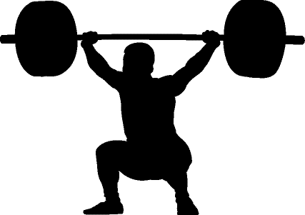
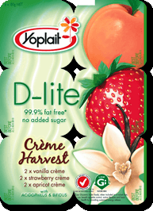
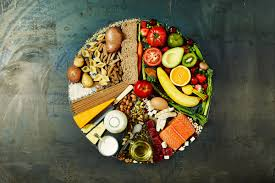
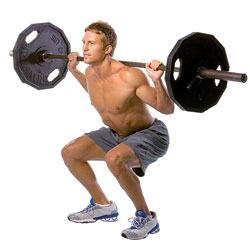

< < < Back
I Found A Woman’s Magazine That Has Better Fitness Advice Than A Men’s Magazine – Return Of Kings
If you will recall, a few months ago I did an analysis of Men’s Health magazine to judge the tips on fitness and masculine behavior they were giving to men. If you will again recall, I judged them and found them severely wanting.
It so happened that at the doctor’s office the other day, I happened to get my hands on another mass market publication, one targeted towards the fair sex, that being Us Magazine. With nothing else to read, I thumbed through it and was genuinely surprised:
For while it had all of the pop culture flotsam and celebrity gossip that most of us would associate with women’s publications, I was surprised at the 20 diet and fitness tips it gave for weight loss. Namely, I couldn’t believe how much better the fitness tips in a woman’s magazine were than a magazine purporting to be for the edification of men’s health.
We can see that Us Magazine’s readers are properly instructed in the following…
1. Do heavy lifting exercises
Regardless of your opinions on whether or not women ought to be lifting weights (personally I feel calisthenics and gymnastics are both more attuned to a woman’s natural attributes and are more likely to give women the figure they desire), the idea of doing strenuous physical activity is always a good idea, albeit that Us Magazine’s idea of “heavy lifting” is not what you or I would call heavy lifting. The core concept is still valid, and once again I would point out that magazines such as Men’s Health don’t even discuss heavy lifting at all.

2. Avoid food that is labeled “lite”
I have absolutely no objections to this, advertisers have long ago learned of the legal loophole that enables them to use “weasel words” that don’t mean anything to fool the consumers into thinking it’s something else. I’ve said it before and I’ll say it again: don’t eat anything that somebody in 1900 wouldn’t recognize.

Half of the words on this label aren’t actual words.
3. Work the Core
You are all aware of the importance I place on core workouts, and that demand remains. Granted, their core workout is crappy and ineffectual, but again, the concept remains valid. In neither the mainstream men’s or women’s magazine will you see the core training I advocate, such as the L-Sit or the overhead farmer’s walk, but again the women’s magazine narrowly pulls ahead because it at least raises the question.
4. Do “Informal” Exercise
They call it “find the fun,” but it’s essentially the concept of “informal exercise,” of going dancing, swimming, or walking. Just find some form of unintentional exercise throughout your day in addition to actual structured exercise regimens. It is an effective weight loss technique which makes it all the more annoying that it’s not discussed at all in men’s publications (presumably because we need to hawk more dude-bro merchandise).
5. Judge Yourself With Scales Every Day
Like I said in the willpower article, you always need some concrete metric to give you a kick in the ass. This sort of “tough love” is inherently masculine—the sort of advice that a father should properly give his son—and yet, it’s found in a magazine intended for the fair sex and not in a magazine for men.
6. Balance The Plate
Something that is true in theory, but the magazine recommends 50% carbs, 20% protein, 30% fat, when in fact, both men and women ought to be doing something close to the exact opposite of that for weight loss and general well being. Admittedly, this is advice I have seen in men’s magazine, so in one regard the two publications are equal.

7. Weightlifting
While I did say I’d prefer women to do calisthenics/gymnastics, weights are not so bad for women, and it even recommends compound lifts like squats and deadlifts—presumably targeting the anatomical regions that women will have more of a biomechanical advantage in due to the natural breadth of their hips. And once again, information on these fundamental compound lifts were completely lacking from a comparable men’s magazine, which is the most shocking thing of all.

Conclusion
While some of this may not be the best for women (deadlifting?), the fact remains that a woman’s fashion magazine is giving objectively better advice FOR MEN, then a men’s fitness magazine. This article was thus written didactically, but not necessarily for purposes of training. If you need any proof of how the powers that be are trying to restructure gender roles, here it is.
Read More: When It’s Okay To Listen To Fat People For Fitness Advice